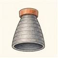

だい6わ ── ノズルと燃焼室の章しぼって、ひろげて、はやくする
ターボポンプ（第5話）が全力で送り込んだ推進剤の終着点が、ここです。燃焼室の中は約3,000℃・100気圧超——鉄の沸点に迫り、たいていの構造金属が融けてしまう温度です。それなのにエンジンは何分も平気で燃え続ける。今回は「速さを作る形」と「溶けない工夫」の話です。
形の不思議は、第2話と第5話でも顔を出した「しぼると速くなる」の続きです。水道のホースの先を親指でつぶすと速くなる——あれは音速までの話。スロートでちょうど音速に達すると（チョーク）、今度は逆に、広げるほど速くなる世界に入ります。だからロケットノズルは「しぼって、ひろげる」砂時計の形。この形が、圧力と温度を秒速数kmの「投げる速さ」へ変換します。
では第2話の宿題——「地上用エンジンで欲張ってノズルを広げすぎると、何が起きるか」。膨張のさせ方を切り替えて見てください。
よりみちエンジンの流量は「首の太さ」が決める
チョークしたスロートを通れる流量は、燃焼室圧 pc とスロート断面積 At でほぼ決まります（c* は「燃焼の上手さ」を表す特性排気速度で、推進剤の組み合わせでだいたい決まる定数）。つまり燃焼室圧と推進剤を決めたうえでは、エンジンの体格は首の太さ At が決め、運転中の推力調整は pc——ポンプの送り込み——で行う。第2話の ṁ、第4話のサイクル、第5話のポンプが、この一本の式で燃焼室につながります。
よりみち3,000℃で溶けない、ふたつの知恵
ひとつめは再生冷却。壁の中に細い溝を何百本も彫り、極低温の燃料を流してから燃やす。壁は守られ、燃料は予熱され、拾った熱はエキスパンダーサイクル（第4話）ならタービンの動力にもなる——捨てるものがない見事な循環です。ふたつめはフィルム冷却。壁ぎわにだけ燃料を多めに吹いて、温度の低いガスの膜で壁を包みます。いちばん過酷なのは熱の集中するスロートで、熱流束は太陽の表面から出る放射に匹敵するレベル。それを数ミリ向こうの冷たい溝がしのぎ続けます。
 流体屋のためのノート
流体屋のためのノート
「しぼって、ひろげて」の正体はこの面積—マッハ数関係です。M<1では面積を絞ると加速、M>1では広げると加速——符号がM=1で反転するので、加速し続けるには音速点に面積の最小（スロート）を置くしかない。ノズルの砂時計形は圧縮性流れの数学がそのまま金属になった形です。過膨張の剥離は実務でも急所で、非対称に剥がれると横向きの荷重（サイドロード）が立ち、起動・停止の過渡で機体を蹴ります。ベルの輪郭を特性曲線法で設計するのは、短い長さで軸方向の運動量を最大化するため——地上で使うノズルでは、その上で剥離余裕を別途確認します。第2話の圧力項 (pe−p0)Ae の設計現場がここです。
{kind=link}
・G. P. Sutton & O. Biblarz, Rocket Propulsion Elements, 9th ed., ch.3・8
・NASA Glenn Research Center, "Nozzle Design" ほかノズル解説（パブリックドメイン）